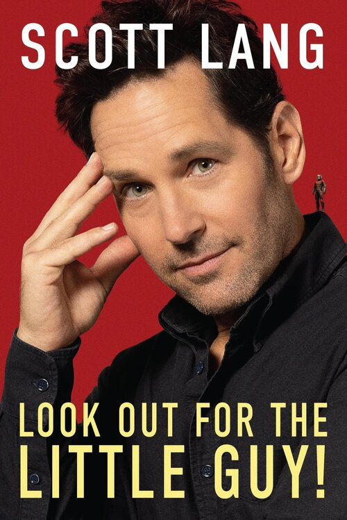

Projects
Ant-Man
Release Date: July 5, 2015
Director: Peyton Reed
Rating: PG-13
The film follows Scott Lang, a former thief, as he is released from prison and wishes to connect with his young daughter, Cassie. Unbeknownst to him, Hank Pym (the original Ant-Man), has selected him as a reasonable successor for the role for a specific mission to stop Darren Cross from replicating Pym's shrinking technology. Lang is trained by Pym's daughter, Hope Van Dyne, as they work to carry out an elaborate heist.

Ant-Man and the Wasp
Release Date: July 17, 2018
Director: Peyton Reed
Rating: PG-13
Following the events of Captain America: Civil War, Scott Lang is once again recruited by Hank Pym to help out on a mission. This time, Lang suits up alongside Pym's daughter, Hope Van Dyne, who has taken on the mantle of her mother; the Wasp. Together, they must learn to work together as partners as they compete with Ava Starr and Sonny Burch for the tech they need in order to rescue Janet from the mysterious Quantum Realm.

Ant-Man and the Wasp: Quantumania
Release Date: February 17, 2023
Director: Peyton Reed
Rating: PG-13
After Avengers: Endgame, most lives have started to shift back to a new normal. Scott's daughter, Cassie, is now an adult with a fascination in the Quantum Realm, something Janet refuses to talk about. Once the family is sucked down to the subatomic universe by one of Cassie's inventions, they must face off with Janet's old ally; a mysterious man who calls himself Kang the Conqueror.

Look Out For the Little Guy
Release Date: September 5, 2023
Author: Scott Lang
Rating: PG-13
This real book, based off of Scott's in-universe memoir of the same title, follows Scott's perspective on the events of Avengers: Endgame, as well as offering advice on a variety of situations to those who may be in need.
